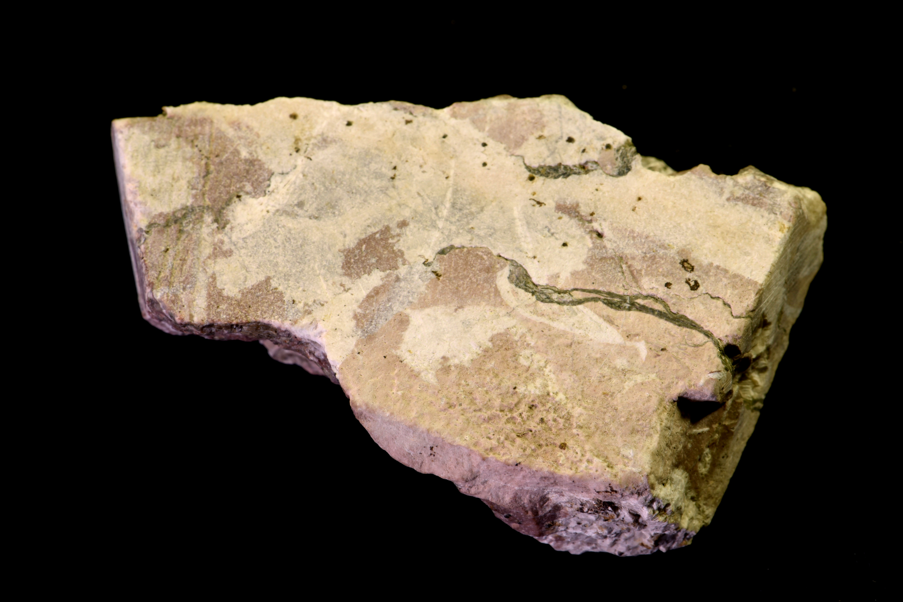

À l'emplacement supposé de sa tombe, Éloi fait édifier un « mausolée » richement décoré.
Des fouilles réalisées en 2011, rue Abbé-Bonpain, ont mis en évidence un bâtiment semi-hypogée qui fait référence à ce fameux « mausolée ». Cette église où des offices avaient lieu, accueillait les reliques de saint Piat auprès desquelles les pèlerins venaient se recueillir.
Le terme « basilique martyriale » employé pour cet édifice fait référence à son plan basilical et à la présence de reliques du martyr. Son style architectural est typique de l'architecture de l'époque mérovingienne.
Pour la gloire du saint et de ses reliques, on dépense sans compter : vitraux et marbres ornent cette église et les artisans spécialisés viennent de loin pour sa construction.
Par exemple, ce fragment de placage tesselle de marbre, provient ainsi du bassin méditerranéen et il témoigne d’échanges commerciaux lointains dès le début du Moyen Âge
